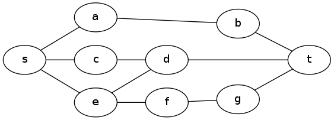
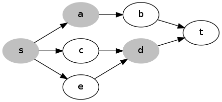
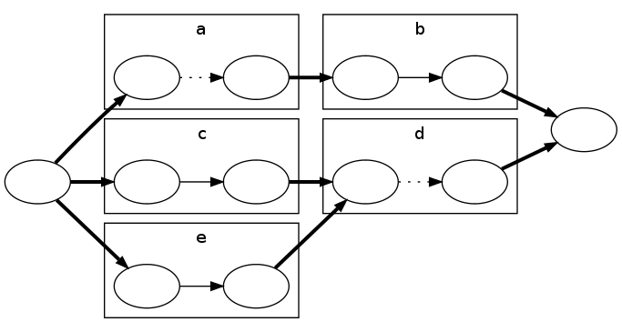

Let G be the graph, s be the entrance node, and t be the node with the secret weapon.

For the small input, we start by finding the shortest distance through the graph from s to t using, e.g., Dijkstra’s algorithm. Call this distance L. If K=0, we cannot obstruct anything, so the answer is simply L.
Now assume K > 0. It is always advantageous to obstruct s, so let’s begin by doing this: reduce K by one, and increase L by 1. Next we want to find if we can increase L one more by obstructing other nodes. This means that every shortest path from s to t must have another obstructed node in it (other than s). We can turn this into a standard graph problem in the following way -- take the subgraph of G which contains all the edges and nodes in a shortest path from s to t. Make each edge directed, pointing in the direction of the path it belongs to.

Now, if there is a set of up to K nodes we can obstruct that covers all the paths, for example a and d in the diagram above, then removing those nodes cuts the graph, separating s and t. So we need to solve the minimum vertex cut problem on this graph and check if the cut has size at most K. To do this, we convert it to an edge cut problem by changing the graph so that each vertex except s and t is split into two nodes, with an edge of capacity 1 between them. The original edges are converted to infinite-capacity edges, as in the diagram below:

A vertex cut of K vertices in the earlier graph will correspond to an edge cut of capacity K in this new graph. In the example above, cutting the edges between the pairs of nodes for a and d cuts the graph. Now we have a minimum edge cut problem, and we can apply the max flow / min cut theorem — the size of the minimum edge cut is the size of the maximum flow — and use one of the standard algorithms for finding the maximum flow. If there exists a flow that is larger than K, then the answer is L, otherwise the answer is L+1.
Now for the large input. We will check, for successive values of X starting at 1, whether it is possible to obstruct up to K nodes in order to stop the guards traveling from node s to node t in time ≤ X. We call this proposition P(X). The first value of X where P(X) is false is the answer.
To determine the truth of P(X) for a specific X, we construct a new graph G', which has a node for each triplet (v, x, b) where v is a vertex in G, x is an integer between 0 and X, and b is true or false. Node (v, x, b) represents that the guards can reach node v in time x if b is false, or reach node v and surpass the obstruction in time x, if b is true. We add the following edges:
Let σ be the node (s, 0, false), and τ be the node (t, X, false). Assuming no nodes are obstructed, we can see that the following properties hold for G':
If some nodes in G are obstructed, the properties above still hold if we delete all the edges in set 1 of the four sets above, where the corresponding v is one of the obstructed nodes. So P(X) is equivalent to a graph cut problem -- determining whether we can disconnect σ and τ by cutting the set 1 edges for up to K nodes of G.
In G, after we choose the nodes to obstruct, for each node v, all of the optimal paths from s to t that pass through v do so at the same time, so the ability to obstruct v was only "useful" at a given time time. So if our ability to obstruct a node were changed to an ability to obstruct a node at just one particular time, the result would be no different. Similarly, in G', after removing a set of edges, for each v, there will only be at most one x for which it was "useful" to cut the edge from (v, x, false) to (v, x, true).
We can prove this more formally: let A be a set of edges from set 1 that have been removed to disconnect σ and τ, and say that it contains the edges from (v, x0, false) to (v, x0, true) and from (v, x1, false) to (v, x1, true) for some v and x0 < x1. If both edges are necessary, then there must be paths from σ to (v, x0, false) and (v, x1, false), and paths from (v, x0, true) and (v, x1, true) to τ. But now there is a path from σ to τ via (v, t0, false), (v, t1-1, false), and (v, t1, true), so σ and τ are not disconnected at all! So for any set of edges A which disconnect σ and τ, there is a subset of A which disconnects σ and τ and has at most one edge cut for any node in G.
This means that P(X) is equivalent to being able to disconnect σ and τ by cutting up to K edges from set 1. As with the small input, this is equivalent to a max flow problem, with unit capacity on the set 1 edges and infinite capacity on the others.
We can solve all these flow problems quite quickly, since we do not need to recompute the maximum flow from scratch each time we increase X — we just add one more "layer" of nodes and edges for the new X value, and update the flow.